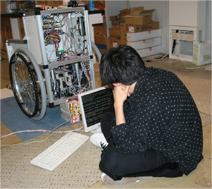

概 要
氏名： 横倉 勇希
所属： 慶應義塾大学 理工学研究科 総合デザイン工学専攻 桂研究室 訪問研究員
連絡先
住所：〒223-8522 横浜市港北区日吉3-14-1
電話：045-566-1724
FAX： 045-566-1720
Email：
履 歴
平成12年(2000年) 4月： 育英工業高等専門学校(現サレジオ工業高等専門学校) 電子工学科 入学
平成17年(2005年) 3月： 育英工業高等専門学校(現サレジオ工業高等専門学校) 電子工学科 卒業
平成17年(2005年) 4月： 長岡技術科学大学 工学部 電気電子情報工学課程 ３年次編入学
平成19年(2007年) 3月： 長岡技術科学大学 工学部 電気電子情報工学課程 卒業
平成19年(2007年) 4月： 長岡技術科学大学大学院 工学研究科 修士課程 電気電子情報工学専攻 入学
平成21年(2009年) 3月： 長岡技術科学大学大学院 工学研究科 修士課程 電気電子情報工学専攻 修了
平成21年(2009年) 4月： 慶應義塾大学 理工学研究科 後期博士課程 総合デザイン工学専攻 入学
平成23年(2011年) 3月： 慶應義塾大学 理工学研究科 後期博士課程 総合デザイン工学専攻 修了 博士(工学)
所属学会
電気学会(IEEJ)，産業応用部門(D部門)
Institute of Electrical and Electronics Engineers(IEEE)
研究分野
パワーエレクトロニクス，ハプティクス，モーションコントロール
研究内容
育英高専(冨田研究室)在学時： 単相アクティブフィルタの制御法
長岡技大(大石研究室)在学時： 実世界触覚情報の保存・再現・通信・制御に関する研究
慶應義塾(桂研究室)： 実世界触覚情報に関する研究
その他
平成21年(2009年) 4月： グローバルCOE研究員
平成22年(2010年) 4月： 日本学術振興会特別研究員(DC2)
平成23年(2011年) 4月： 日本学術振興会特別研究員(PD)
産業応用の横の倉庫 - Side Warehouse of Industrial Applications
Copyright(C), Side Warehouse, All rights reserved.